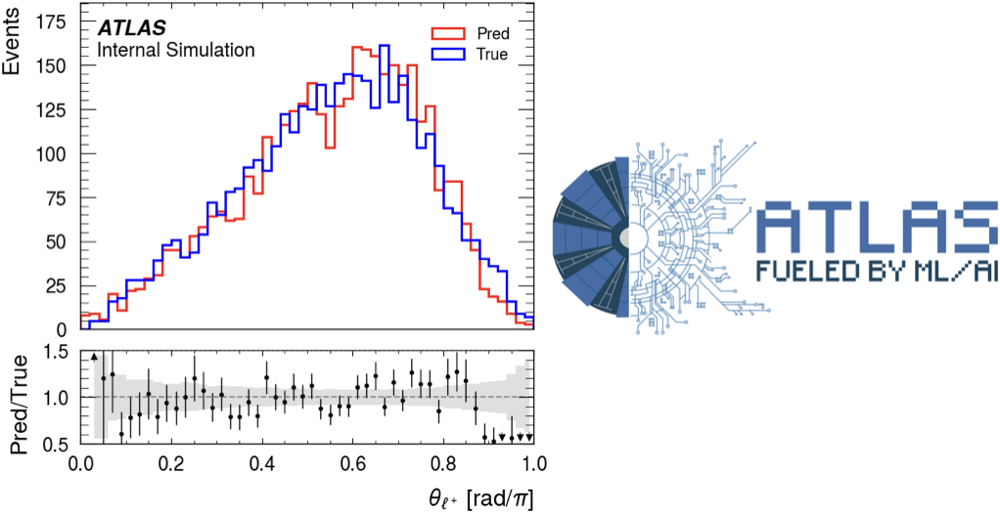

ML Event Reconstruction
I develop transformer, flow-based, and physics-constrained models to recover missing information in the $H \to WW^* \to \ell\nu\ell\nu$ final state, improving key-observable resolution and measurement sensitivity.
The pipeline is built for ATLAS analysis adoption (ONNX format), with reproducible training, systematic stress tests, and channel-consistent validation.
